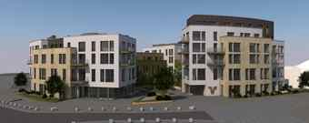
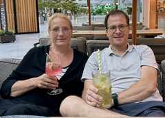

Herzlich willkommen
Schön, dass wir uns wiedersehen.
Hier findet ihr das aktuelle Programm unseres GBF Treffens 2026 – mit Industrie, Geysir, Vulkanregion und viel Zeit für gute Gespräche.
Bis zum Treffen
24. September 2026
Wir freuen uns auf euch!Impressionen
Andernach, Rhein & Vulkanregion
Ein erster visueller Eindruck unserer Ziele



Forum am Schlossgarten
Visualisierung des neuen Wohn- und Geschäftskomplexes, den wir am Samstag besichtigen.
Quelle: VR Bank RheinAhrEifel eG
Unser Programm
Donnerstag bis Sonntag
Stand: August 2026
24September
Tag 1 · Donnerstag
Ankommen am Rhein
Anreise, Zimmer beziehen und gemeinsamer Auftakt.
ab 18:00
Anreise & Hotelbezug
Individuelle Anreise und Bezug der Zimmer im EINSTEIN Hotel am Römerpark.
🏨 EINSTEIN Hotel am RömerparkKonrad-Adenauer-Allee 8 · 56626 Andernach
abends
Gemütliches Beisammensein in der EINSTEIN Sky-Lounge
Für uns ist der Wintergarten reserviert. Wir freuen uns auf einen entspannten Auftakt und gute Gespräche.
25September
Tag 2 · Freitag
Industrie, Geysir & gemeinsamer Abend
10:00
Individuelles Frühstück im Hotel
Entspannter Start in den Freitag.
11:00
Werksführung thyssenkrupp Rasselstein
Besichtigung des Andernacher Werks mit Einblick in die Herstellung von Verpackungsstahl.
🏭 thyssenkrupp Rasselstein GmbHKoblenzer Straße 141 · 56626 Andernach
15:30
Geysir-Museum & Schiffstour zum Geysir
Besuch des Geysir-Museums, anschließend Schiffsfahrt zum Namedyer Werth und Geysir.
💦 Geysir AndernachKonrad-Adenauer-Allee 40 · 56626 Andernach
20:00
Gemeinsames Abendessen in der Sky-Lounge
Abendessen im reservierten Wintergarten – auf Einladung der VR Bank RheinAhrEifel eG.
26September
Tag 3 · Samstag
Andernach & Vulkanregion Mendig
bis 10:00
Frühstück im Hotel
Gemeinsames Frühstück im EINSTEIN Hotel.
11:00
Baustellenbesichtigung „Forum am Schlossgarten“
Besichtigung der neuen Großbaustelle der VR Bank RheinAhrEifel eG.
Im Anschluss gibt es einen kleinen Imbiss.
🏗️ Forum am SchlossgartenErnestus-Platz · Koblenzer Straße 1 · 56626 Andernach
danach
Fahrt mit den PKW nach Mendig
Gemeinsame Weiterfahrt in die Vulkanregion.
14:00
LAVA-DOME & unterirdische Lavakeller
Besuch des Vulkanmuseums LAVA-DOME und anschließend Führung durch die historischen Lavakeller.
Rund 32 Meter unter Mendig; ganzjährig etwa 6–9 °C. Jacke und festes Schuhwerk empfohlen.
🌋 LAVA-DOME MendigBrauerstraße 1 · 56743 Mendig
18:00
Abendessen im Vulkan Brauhaus
Gemeinsames Abendessen in Mendig.
🍺 VULKAN BrauhausLaacher-See-Straße 2 · 56743 Mendig
später
Gemütlicher Ausklang an der Hotelbar
Nach der Rückfahrt zum EINSTEIN Hotel lassen wir den Tag gemeinsam gemütlich an der Hotelbar ausklingen.

Stimmungsbild zum gemütlichen Ausklang an der Hotelbar.
27September
Tag 4 · Sonntag
Frühstück & Heimreise
bis 10:00
Frühstück im Hotel
Gemeinsames Frühstück.
danach
Individuelle Abreise
Gute und sichere Heimreise – und auf ein Wiedersehen.
Wer ist dabei?
Teilnehmer 2026
Unsere Runde in Andernach
Elke & Markus
Do · 24.09. → So · 27.09.
Donnerstag bis Sonntag
Uschi & Frank
Do · 24.09. → So · 27.09.
Donnerstag bis Sonntag
Roland & Stephan
Do · 24.09. → So · 27.09.
Donnerstag bis Sonntag
Eva & Lars
Do · 24.09. → So · 27.09.
Donnerstag bis Sonntag
Claudia & Alexander
Do · 24.09. → So · 27.09.
Donnerstag bis Sonntag
Corinna & Torsten
Do · 24.09. → Sa · 26.09.
Donnerstag bis Samstag – einschließlich Frühstück am Samstag.
Joachim
Fr · 25.09. → Sa · 26.09.
Freitag bis Samstag – bis Tagesende (EoD).
13 Teilnehmer sind für das GBF Treffen 2026 eingeplant. Die individuellen An- und Abreisezeiten sind direkt bei den Namen vermerkt.
Gastgeber 2026
Elke & MarkusWir freuen uns auf vier abwechslungsreiche Tage, gute Gespräche und viele gemeinsame Erlebnisse.